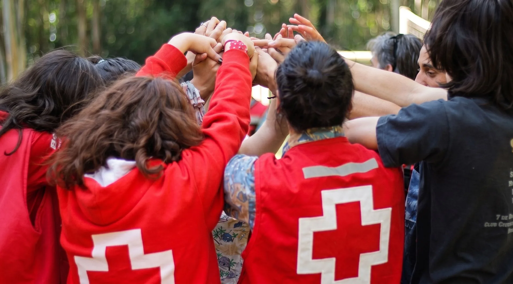
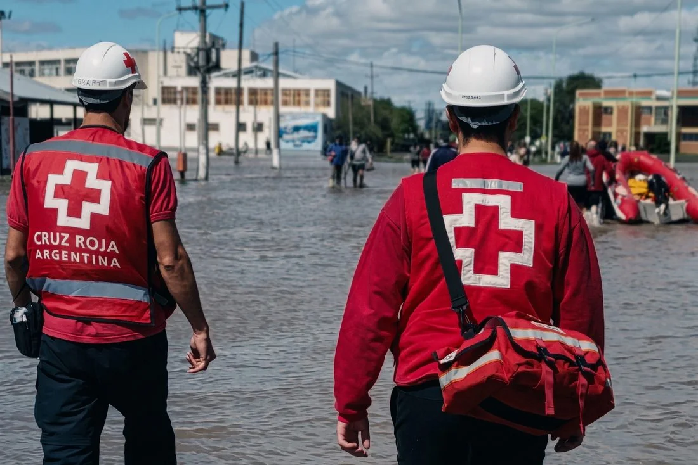

Tecnicatura Superior en Enfermería
Formación integral para el cuidado de la salud de personas, familias y comunidad, con práctica clínica en instituciones de salud desde los primeros años.
Ver plan de estudiosInstituto Superior D-80
Cruz Roja Argentina - Concordia

Concordia, Entre Ríos - Cruz Roja Argentina
Formate en Enfermería o Laboratorio de Análisis Clínicos en Concordia con planes oficiales y prácticas reales. Formá parte de la red humanitaria más grande del mundo.
Títulos oficiales, orientados a la práctica, con inserción laboral en el sistema de salud de Entre Ríos.
Formación integral para el cuidado de la salud de personas, familias y comunidad, con práctica clínica en instituciones de salud desde los primeros años.
Ver plan de estudiosFormación técnica en análisis clínicos y diagnóstico de laboratorio, con prácticas en laboratorios de análisis y servicios de salud.
Ver plan de estudiosNuestra historia
La Filial Concordia fue fundada el 8 de marzo de 1947 por iniciativa de los médicos Néstor Garat y Antonio Scharn, consolidando la presencia humanitaria del movimiento en la provincia de Entre Ríos.
Hoy la filial local cuenta con una sede propia y el Instituto Superior D-80, con una larga historia de respuesta ante las inundaciones del río Uruguay, asistencia sanitaria en barrios vulnerables y capacitación comunitaria en primeros auxilios.
Conocer más sobre la institución →1947
Fundación de la Filial Concordia por los médicos Néstor Garat y Antonio Scharn.
Década a década
Respuesta constante ante las inundaciones del río Uruguay y asistencia en barrios vulnerables.
Hoy
Sede propia y el Instituto Superior D-80, formando nuevas generaciones en salud.
Voluntariado
No hace falta ser estudiante del instituto ni tener experiencia previa: la filial Concordia te forma desde el primer día.
Respuesta Inmediata a Inundaciones
Asistencia directa a evacuados por las crecidas del río Uruguay mediante la entrega de kits sanitarios y contención psicológica.
Prevención y Testeo de Salud Comunitaria
Operación del centro local de testeo gratuito de VIH/ITS y ejecución de campañas de concientización en la vía pública.
Educación en Primeros Auxilios y RCP
Dictado de cursos certificados a la población y despliegue de puestos sanitarios en los eventos masivos de Concordia.

Visitanos
Ya están disponibles las fechas de las mesas finales ordinarias de julio/agosto.
Del 6 al 10 de abril, para estudiantes con impedimento según correlatividades. Inscripción por QUINTTOS.
Abierta hasta el 19 de diciembre; se reanuda el 18 de febrero de 2026.
Inscripción ciclo 2026 · hasta el 19 de diciembre
Completá la pre-inscripción online en pocos minutos.